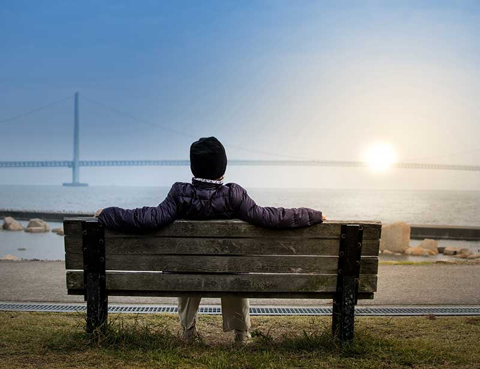
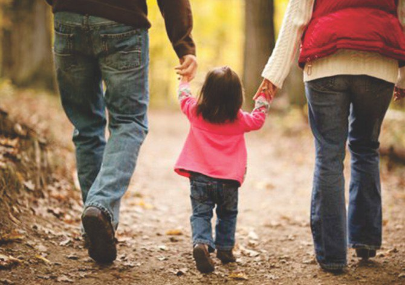
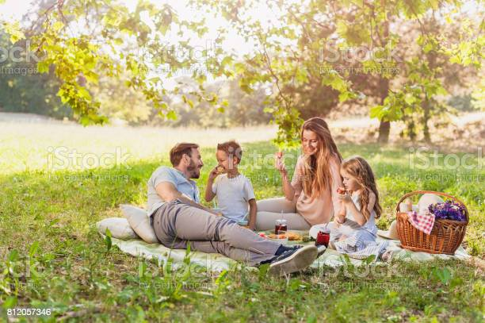

Benefits of connecting with nature
Connecting with nature plays a significant role in improving our physical and mental health. Here are a few benefits that come with connecting with nature:Nature helps reduce stress
Nature improves recovery from illnesses
Nature can boost energy levels
Live in the moment

One of the most important ways to connect with nature is to truly be present in the moment. Modern society trains us to live a fast life, from scheduling meetings to beating traffic to eating fast food. We live in such a fast-paced world that we forget to focus and savor the present moment. To build a connection with nature, you must first detach yourself from all the noise and channel your energy towards nature experiences. You can practice this by first taking out a few minutes within the day to detach yourself from the busy schedules, take deep breaths and spend time taking in the trees, birds, and everything within your natural surroundings.
Get a good spot

Getting a good sit spot can help you maintain consistency in developing a nature connection. When you step outside, find a spot to sit that provides a view of the scenery nature offers. Having a regular place to sit and spend time in natural surroundings helps you appreciate and pay attention to weather patterns as well as the daily or monthly cycles of animals and plants.
Watch animals

Animals are cute, intelligent, and sometimes entertaining. You can watch the day-to-day life of these animals and even pick a few lessons from them. Taking time out to watch the ants move up a tree or a squirrel go down a hole can help you feel more deeply connected with nature. You can watch the day-to-day life of these animals and even pick a few lessons from them. Creating the time to do this as often as possible or perhaps when you need a distraction or a moment out will help you feel more grounded with the natural world around you.
Take a walk, run or hike

Walking, running, or hiking comes with its health and wellness benefits. While you savor the moments of nature, you can improve your health through exercise. You can take a different route or course around your neighborhood and explore nature in all its beauty. You could also invite friends or family members to create a shared experience.
Sit under the night sky
.webp)
If you've always been curious to learn about the stars, sitting under the night sky is an excellent opportunity to do so. You can gather some friends and family to sit with you and explore the night sky. Doing this is a great way to strengthen relationships, connect with nature and find some sense of identity and contemplate our place in the universe.
Go for a picnic

What's better than enjoying your favorite meal with friends at a park? Picnics are always a great way to bond with loved ones and with nature. You can create time to visit your favorite park with your friends and create a list of nature viewing activities to try out.
Watch the sunrise and sunset
Watching the dawn or the end of a day can bring feelings of peace and tranquillity. You could spend time every morning watching the sunrise right from your window. If you are feeling anxious after a long day, you could take a stroll to a park or a favorite hideout that gives you a good view of the sunset and simply enjoy the view of a beautiful evening sky.